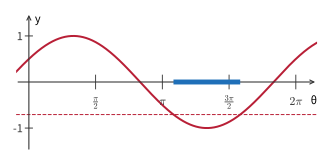

ホーム ＞ 数学II ＞ 三角関数の方程式・不等式・最大最小
別冊章末問題の解答
1. \(0\leqq\theta<2\pi\) のとき、方程式 \(\cos\left(3\theta- \dfrac{\pi}{3}\right)=\dfrac{1}{2}\) を解け。
\(t=3\theta- \dfrac{\pi}{3}\) とおいて範囲を調べる
\(0\leqq\theta<2\pi\) より
\[- \dfrac{\pi}{3}\leqq t<\dfrac{17 \pi}{3}\]\(\cos\,t=\dfrac{1}{2}\) を解く
単位円（\(x\) 座標）で考えて、範囲内の \(t\) を求める。
\[t=- \dfrac{\pi}{3},\ \dfrac{\pi}{3},\ \dfrac{5 \pi}{3},\ \dfrac{7 \pi}{3},\ \dfrac{11 \pi}{3},\ \dfrac{13 \pi}{3}\]\(\theta\) に直す
\(t=3\theta- \dfrac{\pi}{3}\) より \(\theta=\dfrac{t+\dfrac{\pi}{3}}{3}\)。
\[\theta=0,\ \dfrac{2 \pi}{9},\ \dfrac{2 \pi}{3},\ \dfrac{8 \pi}{9},\ \dfrac{4 \pi}{3},\ \dfrac{14 \pi}{9}\]（例題1の型）
【答案】
\[\theta=0,\ \dfrac{2 \pi}{9},\ \dfrac{2 \pi}{3},\ \dfrac{8 \pi}{9},\ \dfrac{4 \pi}{3},\ \dfrac{14 \pi}{9}\]答
2. \(0\leqq\theta<2\pi\) のとき、方程式 \(2\cos^2\theta-3\sin\theta-3=0\) を解け。
1種類の三角関数にそろえる
\(\cos^2\theta=1-\sin^2\theta\) を使い、\(\sin\theta\) だけの式にする。
\[2\cos^2\theta-3\sin\theta-3=0\]\[2\left(1-\sin^2\theta\right)-3\sin\theta-3=0\]\(t=\sin\theta\) とおいて2次方程式を解く
\(-1\leqq t\leqq1\) に注意。整理して
\[- 2 t^{2} - 3 t - 1=0\]\[-2(t+\dfrac{1}{2})(t+1)=0\ \Rightarrow\ t=-1,\ - \dfrac{1}{2}\]範囲に合う解を選ぶ
範囲に合うのは \(t=-1,\ - \dfrac{1}{2}\)。
\(\theta\) を求める（\(0\leqq\theta<2\pi\)）
\(\sin\theta=-1\) より \(\theta=\dfrac{3 \pi}{2}\)
\(\sin\theta=- \dfrac{1}{2}\) より \(\theta=\dfrac{7 \pi}{6},\ \dfrac{11 \pi}{6}\)
（例題2の型）
【答案】
\[\theta=\dfrac{7 \pi}{6},\ \dfrac{3 \pi}{2},\ \dfrac{11 \pi}{6}\]答
3. \(0\leqq\theta<2\pi\) のとき、不等式 \(\sin\left(\theta+\dfrac{\pi}{6}\right)<- \dfrac{\sqrt{2}}{2}\) を解け。
\(t=\theta+\dfrac{\pi}{6}\) とおいて範囲を調べる
\[\dfrac{\pi}{6}\leqq t<\dfrac{13 \pi}{6}\]グラフで \(y=\sin\,t\) と \(y=- \dfrac{\sqrt{2}}{2}\) の上下を見る
\(\sin\,t<- \dfrac{\sqrt{2}}{2}\) を満たす部分を、グラフ（または単位円）から読む。境界は \(\sin\,t=- \dfrac{\sqrt{2}}{2}\) の解。
\(\theta\) の範囲に直す
\(\theta\) のグラフにして図に示す（青い太線が答えの範囲、赤い破線が \(y=- \dfrac{\sqrt{2}}{2}\)）。

答え
\[\dfrac{13 \pi}{12}<\theta<\dfrac{19 \pi}{12}\]（例題3の型）
【答案】
\[\dfrac{13 \pi}{12}<\theta<\dfrac{19 \pi}{12}\]答
4. 関数 \(y=2\cos^2\theta+3\sin\theta-2\) の最大値・最小値を求めよ。（\(\theta\) はすべての実数）
\(\sin\theta=t\) とおいて1文字にする
\(\cos^2\theta=1-\sin^2\theta\)、\(-1\leqq t\leqq1\)。
\[y=2\left(1-t^2\right)+3t-2=- 2 t^{2} + 3 t\]平方完成する
\[y=- 2 \left(t - \dfrac{3}{4}\right)^{2} + \dfrac{9}{8}\]\(-1\leqq t\leqq1\) での最大・最小
頂点 \(t=\dfrac{3}{4}\) は範囲の内側。 両端と頂点の値を比べる。
\[t=-1:\ y=-5,\quad t=1:\ y=1,\quad t=\dfrac{3}{4}:\ y=\dfrac{9}{8}\]答え
最大値 \(\dfrac{9}{8}\)（\(\sin\theta=\dfrac{3}{4}\)）、最小値 \(-5\)（\(\sin\theta=-1\)）。
（例題4の型）
【答案】
\[\text{最大値 }\dfrac{9}{8}\ (\sin\theta=\dfrac{3}{4}),\quad \text{最小値 }-5\ (\sin\theta=-1)\]答
5. \(0\leqq\theta<2\pi\) のとき、\(y=2\sin\theta\cos\theta-1(\sin\theta+\cos\theta)+2\) の最大値・最小値を求めよ。
\(t=\sin\theta+\cos\theta\) とおく
\(t=\sqrt2\sin\left(\theta+\dfrac\pi4\right)\) だから \(-\sqrt2\leqq t\leqq\sqrt2\)。
\(\sin\theta\cos\theta\) を \(t\) で表す
\(t^2=1+2\sin\theta\cos\theta\) より
\[2\sin\theta\cos\theta=t^2-1\]\(y\) を \(t\) の2次関数にする
\[y=(t^2-1)-1t+2=t^{2} - t + 1\]\[y=\left(t-\dfrac{1}{2}\right)^2+\dfrac{3}{4}\]\(-\sqrt2\leqq t\leqq\sqrt2\) での最大・最小
頂点 \(t=\dfrac{1}{2}\) は範囲の内側。
\[t=- \sqrt{2}:\ y=\sqrt{2} + 3,\quad t=\sqrt{2}:\ y=- \sqrt{2} + 3,\quad t=\dfrac{1}{2}:\ y=\dfrac{3}{4}\]答え
最大値 \(\sqrt{2} + 3\)、最小値 \(\dfrac{3}{4}\)。
（例題5の型）
【答案】
\[\text{最大値 }\sqrt{2} + 3,\quad \text{最小値 }\dfrac{3}{4}\]答